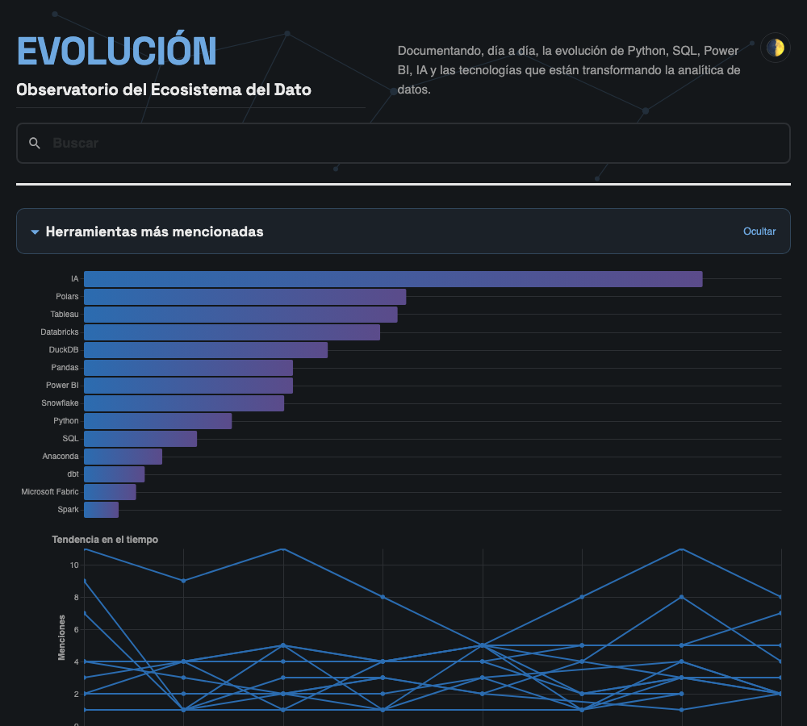
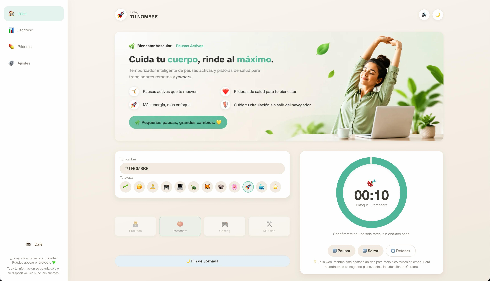
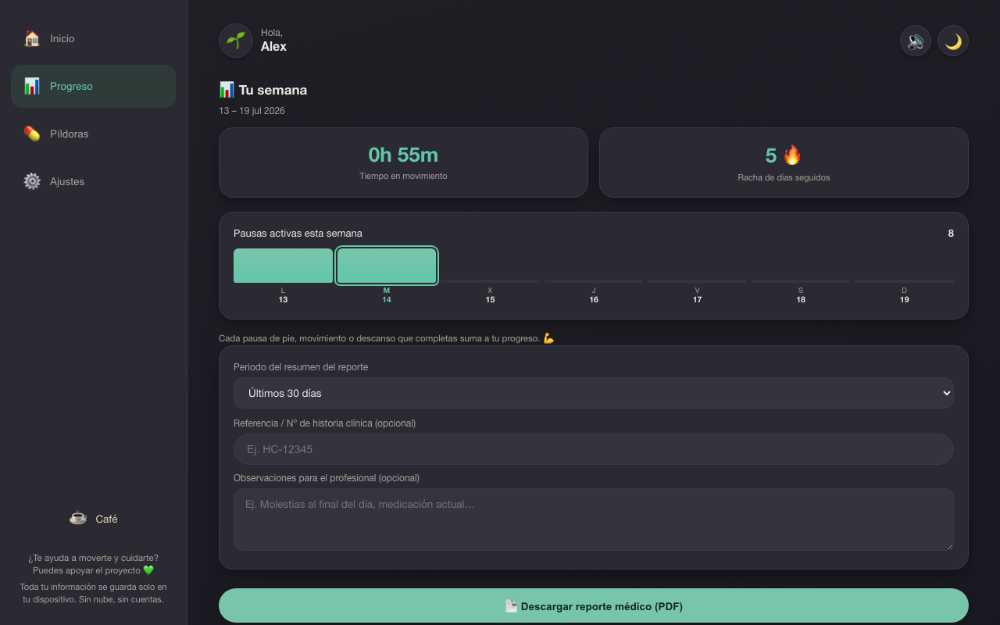
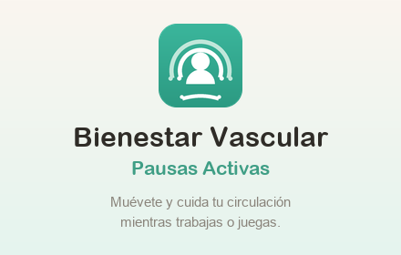

Mi Ecosistema de Datos
Cobertura real del pipeline en mis tres proyectos: uno profundiza en el análisis, otro llega a producción y el tercero se publica solo cada mañana. Filtra para ver cada uno por separado.
Stack del proyecto
alexandra:~$ sql -u recruiter -p
Enter password: *********
sql> SELECT proyecto, stack, evidencia, estado
FROM portfolio.proyectos;
| proyecto | stack | evidencia | estado |
|---|---|---|---|
| Fever-Lens | SQL · Python · Power BI | Prototipo validado · fase SQL | En desarrollo |
| EVOLUCIÓN | Python · IA · GitHub Actions | Publicación diaria autónoma | En producción |
| Bienestar Vascular | IA Generativa · PWA | Export CSV/PDF · ES/EN | En Chrome Web Store |
3 rows in set (0.01 sec)
sql>
Análisis en Acción
Proyecto Fever-Lens
Pipeline de datos de punta a punta para optimizar la inversión publicitaria en eventos masivos. Proyecto en desarrollo: la lógica de negocio (ROAS y CPA) está prototipada y validada en Google Sheets, y actualmente estoy en la fase SQL, uniendo 2,3M de filas de datasets de comportamiento de usuario. Próximas fases: análisis de correlaciones y modelo de ocupación en Python, y dashboard final en Power BI sobre modelo dimensional.
sql> SELECT fase, estado
FROM fever_lens.pipeline;
| fase | estado |
|---|---|
| Lógica de negocio (Google Sheets) | ✔ Validada |
| Unión y limpieza en SQL · 2,3M filas | ► En curso |
| Análisis y modelo en Python | Pendiente |
| Dashboard en Power BI | Pendiente |
4 rows in set — aquí se publicará el dashboard al cerrar la última fase
sql>
EVOLUCIÓN · Observatorio del Ecosistema del Dato
Plataforma editorial que documenta a diario el ecosistema del dato en español, construida como un pipeline: cada mañana un agente de IA en modo desatendido redacta el boletín, lo sube mediante la API de GitHub y GitHub Actions reconstruye y publica el sitio — cero pasos manuales. Python limpia y estructura el contenido, y pandas + Altair alimentan un panel interactivo de menciones y tendencias por herramienta, adaptado a modo claro/oscuro. Incluye buscador, RSS y newsletter semanal en LinkedIn.

Bienestar Vascular · Pausas Activas
Herramienta de pausas activas para quienes pasan el día frente a la pantalla, publicada y aprobada en la Chrome Web Store y disponible también como app web instalable. Modelé los datos del usuario —actividad diaria, rachas— y diseñé la exportación en CSV/PDF pensada para analizarlos después en Excel o Power BI. Todo se guarda solo en el dispositivo: sin cuentas ni servidores. La concebí y la llevé a producción yo sola, apoyándome en IA generativa para la implementación del código.



Trayectoria Profesional
Cinco roles donde el análisis de datos ya formaba parte de mi día a día.
Personal de Producción
Baxter International Inc. Mar. 2024 – Oct. 2025Supervisión de líneas de producción automatizadas, con monitoreo constante de KPIs de productividad y control de calidad para reducir tiempos de inactividad y garantizar la eficiencia del proceso.
Servicio de Atención al Cliente
Meliá Hotels International Jun. 2023 – Nov. 2023Gestión de incidencias con registro detallado que asegura la integridad y calidad de los datos del cliente. Identificación de patrones en reclamaciones para reportar problemas recurrentes.
Servicio de Atención al Cliente
Barceló Hotel Group Ene. 2023 – Abr. 2023Análisis de quejas recurrentes con el objetivo de mejorar la satisfacción del cliente y optimizar los tiempos de respuesta.
Auxiliar de Ventas y Marketing
Pepe Ganga Ago. 2017 – Feb. 2018Seguimiento a objetivos de venta diaria y control de inventarios. Análisis del comportamiento de compra en tienda para apoyar estrategias de visual merchandising.
Auxiliar de Investigación de Mercados
Solsalud EPS Abr. 2012 – Dic. 2012Recolección y depuración de datos primarios mediante encuestas. Clasificación de información de consumidores para detectar tendencias de mercado.